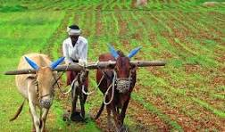

1.Agriculture deals with all aspects of crop cultivation
2.Agriculture:Generally involves large-scale,extensive farming operations
3.It is done in large fields
4.There is a crop Cultivation + Animal Farming
5.Crops used for only food(Wheat grown for human consumption)
